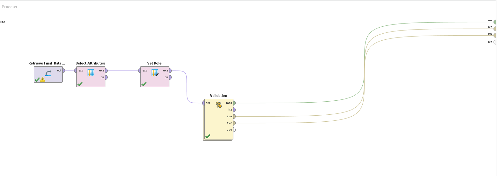

This project's focus was on cyber adversaries in China. Our aim was to identify and predict which techniques are most likely to be seen in future attacks among various cyber adversaries. We hope that this would allow an organization to quickly classify the likely cyber adversaries as information is collected specifying details of an attack. We collected all of our data from the not-for-profit think tank MITRE. MITRE collected their supplementary information and data from a variety of cybersecurity firms such as McAfee, RSA, and Crowdstrike.
Our data was compiled from the open-source data provided by MITRE
From their data we created a spreadsheet that contained: - The groups we were focused on - Their known aliases - The industries they typically target - The software they are known to use - Any specific techniques that they are known to use - The location of the IP address typically associated with their attacks (if available) - The known times of attacks
Our dataset was hand filled and contains the name, aliases, targets, software, techniques, location or IP address associated with the groups, as well as common times for the groups to attack. Not all the data could be found among the various groups. Between the three groups, Night Dragon had information on common times associated with their attacks, whereas the others did not. In comparison, Deep Panda had a significant amount of IP addresses associated with them as well as much more alias than the other cyber adversaries.
The adversaries of focus are Night Dragon, Deep Panda, and Putter Panda. Each group has a variety of associated aliases. Night Dragon is associated with the alias Musical Chairs. Deep Panda can also be associated with the names ShellCrew, WebMasters, KungFu Kittens, PinkPanther, and Black Vine. Putter Panda is commonly associated with the names APT2 and MSUpdater.
The groups target a variety of different entities and are all known for utilizing different software. The techniques are the only common elements among the adversaries and when combined with each adversaries associated targets, software, and aliases, can be used as a means of identification in the future. The common techniques found among the various groups include File Deletion, Command-Line Interface, as well as Process Discovery.
Night Dragon is known to target oil, gas, and petrochemical companies. Deep Panda targets various industries including governments, defense, financial, and telecommunication while Putter Panda targets space, satellites, and remote sensing technology.
Identified ProblemsWhile building and testing our model we ran into a few unforeseen problems. It makes sense, in hindsight, for our model to have lower kappa and accuracy scores because of the chosen data. All information was collected and utilized because the adversaries and their associated attacks were open source knowledge. Much of the critical information which would be useful in a machine learning model, such as ours, may not be easily accessible in the public domain. Cyber adversaries of interest, if successful, will not have a large amount of information known on their techniques, software utilized, and known IP address associations. If this knowledge is commonly known and easily accessible on the internet, it is assumed the adversaries would change associated techniques and methods for attacks, otherwise, they would not be successful in the future.
Cyber Adversaries Count
This graph represents the number of cyber adversaries associated with each group
Our data utilized both Decision Tree and Deep Learning models.
Decision Tree provided us an accuracy of 30.67% and a classification error of 69.33%.
Decision Tree Training Accuracy
Decision Tree Training Kappa
Decision Tree Test Accuracy
Decision Tree Test Kappa
Deep Learning had an accuracy of 21.47% and a classification error of 78.53%.
Deep Learning Training Accuracy
Deep Learning Training Kappa
Deep Learning Test Accuracy
Deep Learning Test Kappa
These accuracies represent the percent at which the models were able to predict the adversaries with the techniques, software, and associated locations. If a model has an accuracy which is too high, this represents a model that is too complex for the provided data set. If the model is overly complex, the testing data is going to be overly reliant on its training data and overconfident in its results. The model would then just be a visualization of the data from which it is learning from and would not be an accurate representation of new data and their most likely results. If the accuracy is too low then the model is not relying on training data at all and is overly simplistic. This type of model would not be able to generalize or capture all of the aspects of our data and therefore perform poorly in the results.

Main Process
Inner Process
Decision Tree Model Process Script
Simulator Results Deep Learning The Results
Main Process

Inner Process
Deep Learning Model Process Script
Simulator ResultsOur project comprised of both a Decision Tree and Deep Learning model. Using a Decision Tree model not only gave us the best accuracies out of all the models, but it also allowed us to create an “if-then” approach to understanding our data. This technique is incredibly useful in deciding which cyber actor is most likely to be associated in the future based on each of the techniques and software and can only be decided by walking through a variety of steps to come to a decision. Utilizing the “simulator” in the auto model portion of RapidMiner allowed us to choose an IP address, target, software, and technique, and see the predicted actor most likely associated with them, as well as how those decisions either contradicts or supports the actor. We could choose between the various IP addresses found, software, techniques, and targets. After choosing each one we were able to identify the most likely associated alias. This was also visualized in the actual decision tree where an individual could walk through each decision and find the most likely associated actor. This was the most logical way to represent the data
Although Deep Learning models are black boxes with no true means of understanding how they perform their analysis, we chose to use this model to form a more complex understanding of our data. Even though this model did not have the best accuracy score, it allowed us to apply further depth to our data. This is especially important considering the significant amount of data in our project. The model’s depth was completed through hidden networks and a nonlinear function applied to the result. Although our data was also comprised of a variety of different types of features, and therefore useful for tree models, we wanted to see a comparison between models to further understand the effect on our accuracy. Deep Learning was also of use because of its ability to go through multiple steps prior to coming to a decision. This is significant in predicting which cyber actor is most likely associated with an attack.
Our parameters were chosen based on the data that we were able to obtain. Because we could not get sufficient data on all known IP addresses or the financial impact, we had to use the (mostly nominal) data which we had access to. This meant that our parameters were limited to those which would be useful in following a decision tree model or in utilizing the deep learning model.
We also found that other models could not be used because they needed numerical data and the majority of our data set was nominal. We tried several other models, but ultimately they provided little to no useful information which would be beneficial in identifying potential cyber adversaries.
Our accuracy scores were much lower than initially anticipated. In hindsight, however, these scores make sense for our data we are using. It is hard to gather all necessary information on cyber adversaries and we are limited because of what is known in the public domain. If adversaries are successful in their attacks information might not be found about them. There are some adversaries who do want to be found, but most will find their way into a computer system, complete what is necessary for their attack, and then leave without a trace. Adversaries may leave signatures as a means for future identification, but these may not provide a complete picture to locate and identify them. Over time and with enough information collected on certain groups, we will then be able to create a more accurate picture of them. The obtained accuracy scores reflected the discrepancy in information known on the adversaries of interest.
We plan on continuing and improving this model in the following semester. Data will be gathered in a Deep Web analysis class, where hopefully, information such as IP addresses, software, and new techniques will be more readily available on the attacks. As well, because all of the data was imputed by hand into an excel sheet, this will give us more time to validate as well as research the necessary information.